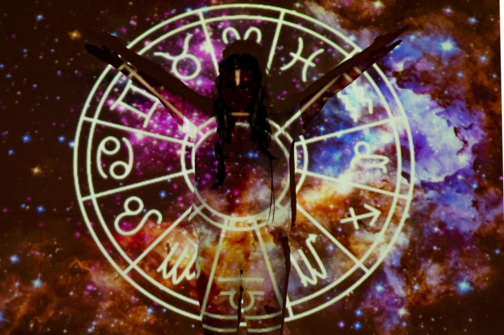

Întreabă un grup de prieteni ce „zodie” sunt și aproape toți îți vor răspunde pe loc, după ziua lor de naștere. Dar întreabă-i ce sistem astrologic folosesc și probabil te vor privi nedumeriți.
Astrologia este o colecție variată de tradiții străvechi, care s-au dezvoltat în colțuri complet diferite ale lumii. Fiecare sistem folosește alte calcule, alte puncte de plecare și, uneori, ajunge la concluzii foarte diferite despre exact aceeași dată de naștere.
Dacă te-ai întrebat vreodată de ce horoscopul occidental te numește un Leu înfocat, în timp ce un astrolog vedic insistă că ești un Rac sensibil, nu e nicio greșeală, e doar o diferență de sistem. Iată, pe scurt și limpede, cele trei mari tipuri de astrologie practicate azi și ce le pune pe fiecare în mișcare.
Astrologia occidentală: lentila psihologică
Dacă ți-ai citit vreodată horoscopul zilei sau ți-ai căutat zodia pe internet (află aici ce înseamnă asta), cunoști deja astrologia occidentală.
Acest sistem folosește zodiacul tropical, adică este legat de anotimpurile Pământului, nu de poziția reală a constelațiilor în spațiul cosmic. Anul astrologic începe la echinocțiul de primăvară și împarte cerul în douăsprezece felii egale de câte 30 de grade.
La ce se pricepe cel mai bine: Astrologia occidentală este profund psihologică. Excelează la întrebări precum „Cine sunt?” și „Cum mă comport?”. Este sistemul preferat pentru a-ți schița personalitatea, a-ți descoperi trăsăturile de caracter și a calcula compatibilitatea în relații.
Astrologia vedică: harta destinului
Astrologia vedică, cunoscută istoric sub numele de Jyotish, își are rădăcinile cu mii de ani în urmă, în scrierile Indiei antice. Spre deosebire de astrologia occidentală, cea vedică folosește sistemul sideral. Asta înseamnă că totul se calculează pe baza pozițiilor reale, actuale, ale constelațiilor pe cer.
Pentru că Pământul se clatină încet pe axa lui de-a lungul mileniilor (un proces numit precesie), sistemele tropical și sideral s-au îndepărtat unul de altul cu aproximativ 23–24 de grade. Tocmai din cauza acestei deplasări zodia ta s-ar putea schimba când îți citește harta un astrolog vedic.
La ce se pricepe cel mai bine: Acolo unde astrologia occidentală se concentrează pe psihologie, cea vedică se concentrează pe karmă, destin și momentul potrivit. Folosește perioade planetare complexe, numite Dasha, ca să prezică anumite evenimente din viață și pune mare accent pe felul în care îți poți croi drumul pe calea care ți-a fost dată.
Astrologia chinezească: ciclul elementelor
Astrologia chinezească renunță complet la binecunoscuta roată a zodiacului. În schimb, funcționează pe baza unui calendar sofisticat, cu mai multe straturi, pornind de la anul nașterii tale.
Temelia este un ciclu de doisprezece ani, fiecare an fiind guvernat de alt animal (Șobolanul, Bivolul, Tigrul, Iepurele, Dragonul, Șarpele, Calul, Capra, Maimuța, Cocoșul, Câinele și Mistrețul). Dar merge și mai adânc: aceste animale se combină cu cinci elemente (Lemnul, Focul, Pământul, Metalul și Apa). Împreună, ele formează un tipar de 60 de ani. Asta înseamnă că un „Dragon de Apă” și un „Dragon de Foc” vor avea energii foarte diferite, deși au același animal-zodie.
La ce se pricepe cel mai bine: Astrologia chinezească întreabă: „În ce tipar ciclic mai larg te-ai născut?”. Excelează la cercetarea trăsăturilor unei generații, a temperamentului natural și a echilibrului dintre Yin și Yang în viața unui om.
Pe care să-l folosești?
Nicio regulă nu spune că trebuie să alegi unul singur. De fapt, mulți oameni consultă sisteme diferite, în funcție de ce încearcă să lămurească în acel moment:
- Vrei să afli repede ceva despre personalitatea ta sau despre o nouă pasiune romantică? Astrologia occidentală e cea mai bună alegere.
- Cauți previziuni foarte bine structurate, pe termen lung, despre carieră sau despre marile evenimente din viață? Îndreaptă-te spre astrologia vedică.
- Ești curios să afli mai multe despre temperamentul tău sau despre energia culturală a anului în care te-ai născut? Astrologia chinezească îți oferă o perspectivă bogată și complet diferită.
Până la urmă, toate sunt hărți diferite și frumoase ale exact aceluiași cer, desenate de culturi diferite, din puncte de plecare diferite, la secole distanță.